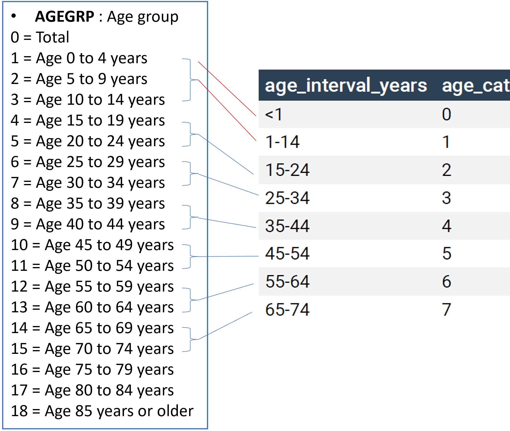

| Age | age_cat |
|---|---|
| 0 | 0 |
| 1-14 | 1 |
| 15-24 | 2 |
| 25-34 | 3 |
| 35-44 | 4 |
| 45-54 | 5 |
| 55-64 | 6 |
| 65-74 | 7 |
Introduction: YPLL
Years of Potential Life Lost (YPLL) is widely used for measuring the rate and distribution of premature mortality. CHRR uses YPLL as one of health outcomes to measure county health status.YPLL is a rate and age-adjusted, and it can be calculated as
\[ \boxed{ {YPLL \: Rate }_{{age-adj}}=\sum_{i=0}^{75} \frac {(75-i)\cdot d_i\cdot {w_i}}{p_i} \cdot 100,000} \] where
\(75\) is the upper age limit established,
\(i\) is the midpoint of the grouped year of age at death (e.g., 59.5 for age group 55-64),
\(d_i\) is the number of deaths at age \(i\).
\(p_i\) is the population for age group i.
\(\sum p_i\) is the population between the lower and upper age limits (e.g., 75 as the upper age limit and 0 as the lower age limit)
\({w_i}\) is the weight of age adjustment for group i on the basis of the US standard year 2000 population. \(\sum w_i = 1\)
The population data is needed in the denominator of the above formula, and \(p_i\) has been based on the single-year-of-age, bridged-race, county-level population estimates released by the National Center for Health Statistics (NCHS). The series of bridged-race population estimates is a collaborative work between NCHS and U. S. Census Bureau. However, NCHS discontinued the production of single-year-of-age, bridged-race population estimates after releasing 2020 data. In their documentation, it is mentioned that “The U.S. Census Bureau annually releases unbridged population estimates for five-year age groups and race at the county level.” This post uses R to explore the feasibility of getting population data needed for subgroup YPLL calculations from Census population estimates.
What population data is needed for subgroup YPLL calculation
We want to have subgroup population data by age categories at county level.
Age categories (age_cat)
From the lower age limit 0 to the upper age limit 75, the population is usually grouped into 8 age categories (coded from 0 to 7):
Race/ethnicity subgroups
Five race/ethnicity subgroups have been used in YPLL calculations at CHRR.
| Subgroup | Description |
|---|---|
| 1 | non-Hispanic, White alone |
| 2 | non-Hispanic, Black alone |
| 3 | non-Hispanic, AIAN (American Indian or Alaska Native) alone |
| 4 | non-Hispanic, Asian alone |
| 8 | Hispanic |
Note: Bridged and un-bridged race populations are not identical. By bridging, those in the group “two or more races” are assigned using probabilistic factors and included in White, Black, AIAN, or Asian.
Census population estimates
Let’s use 2020 Census county-level population estimates as an example and see how the data look like. Here is the link and the file name is CC-EST2020-ALLDATA.csv.
Get data directly from Census pft website
cc_est2020_all <- read_csv("https://www2.census.gov/programs-surveys/popest/datasets/2010-2020/counties/asrh/CC-EST2020-ALLDATA.csv") |>
janitor::clean_names() |>
glimpse()Rows: 776,321
Columns: 80
$ sumlev <chr> "050", "050", "050", "050", "050", "050", "050", "050", "…
$ state <chr> "01", "01", "01", "01", "01", "01", "01", "01", "01", "01…
$ county <chr> "001", "001", "001", "001", "001", "001", "001", "001", "…
$ stname <chr> "Alabama", "Alabama", "Alabama", "Alabama", "Alabama", "A…
$ ctyname <chr> "Autauga County", "Autauga County", "Autauga County", "Au…
$ year <dbl> 1, 1, 1, 1, 1, 1, 1, 1, 1, 1, 1, 1, 1, 1, 1, 1, 1, 1, 1, …
$ agegrp <dbl> 0, 1, 2, 3, 4, 5, 6, 7, 8, 9, 10, 11, 12, 13, 14, 15, 16,…
$ tot_pop <dbl> 54571, 3579, 3991, 4290, 4290, 3080, 3157, 3330, 4157, 40…
$ tot_male <dbl> 26569, 1866, 2001, 2171, 2213, 1539, 1543, 1594, 2004, 19…
$ tot_female <dbl> 28002, 1713, 1990, 2119, 2077, 1541, 1614, 1736, 2153, 21…
$ wa_male <dbl> 21295, 1411, 1521, 1658, 1628, 1201, 1234, 1289, 1596, 16…
$ wa_female <dbl> 22002, 1316, 1526, 1620, 1585, 1184, 1223, 1298, 1645, 16…
$ ba_male <dbl> 4559, 362, 399, 431, 502, 293, 277, 276, 338, 303, 315, 3…
$ ba_female <dbl> 5130, 317, 374, 406, 424, 312, 350, 378, 432, 384, 353, 3…
$ ia_male <dbl> 119, 5, 14, 15, 12, 6, 1, 1, 11, 9, 14, 11, 7, 6, 3, 4, 0…
$ ia_female <dbl> 139, 3, 8, 12, 7, 9, 3, 10, 9, 14, 11, 12, 9, 13, 8, 5, 6…
$ aa_male <dbl> 200, 13, 17, 23, 25, 8, 7, 12, 30, 16, 19, 10, 6, 7, 4, 2…
$ aa_female <dbl> 284, 15, 21, 18, 14, 7, 23, 25, 30, 36, 27, 17, 9, 13, 9,…
$ na_male <dbl> 29, 1, 1, 4, 4, 3, 6, 3, 2, 1, 3, 0, 1, 0, 0, 0, 0, 0, 0,…
$ na_female <dbl> 18, 0, 3, 1, 2, 2, 3, 1, 3, 2, 0, 0, 0, 1, 0, 0, 0, 0, 0,…
$ tom_male <dbl> 367, 74, 49, 40, 42, 28, 18, 13, 27, 20, 13, 14, 8, 9, 6,…
$ tom_female <dbl> 429, 62, 58, 62, 45, 27, 12, 24, 34, 18, 23, 20, 7, 14, 1…
$ wac_male <dbl> 21633, 1479, 1570, 1694, 1664, 1228, 1250, 1301, 1621, 16…
$ wac_female <dbl> 22391, 1368, 1583, 1681, 1624, 1206, 1235, 1319, 1675, 16…
$ bac_male <dbl> 4704, 405, 425, 453, 525, 301, 280, 279, 342, 307, 317, 3…
$ bac_female <dbl> 5306, 362, 403, 436, 444, 324, 351, 386, 446, 388, 359, 3…
$ iac_male <dbl> 277, 23, 27, 29, 23, 17, 14, 6, 29, 22, 22, 24, 11, 14, 7…
$ iac_female <dbl> 314, 18, 19, 27, 20, 24, 12, 15, 22, 27, 25, 28, 14, 26, …
$ aac_male <dbl> 300, 34, 32, 32, 39, 16, 12, 18, 38, 22, 22, 11, 8, 8, 5,…
$ aac_female <dbl> 409, 28, 42, 37, 31, 12, 25, 40, 44, 41, 32, 20, 11, 14, …
$ nac_male <dbl> 42, 3, 3, 4, 6, 5, 6, 3, 2, 3, 3, 0, 3, 0, 1, 0, 0, 0, 0,…
$ nac_female <dbl> 37, 1, 4, 5, 5, 3, 3, 2, 3, 4, 5, 0, 0, 2, 0, 0, 0, 0, 0,…
$ nh_male <dbl> 25875, 1778, 1933, 2105, 2153, 1474, 1477, 1533, 1948, 19…
$ nh_female <dbl> 27386, 1651, 1916, 2055, 2026, 1499, 1570, 1674, 2108, 20…
$ nhwa_male <dbl> 20709, 1337, 1460, 1613, 1580, 1141, 1180, 1234, 1547, 15…
$ nhwa_female <dbl> 21485, 1260, 1465, 1570, 1543, 1151, 1184, 1245, 1610, 16…
$ nhba_male <dbl> 4512, 356, 398, 421, 495, 291, 272, 273, 336, 301, 312, 3…
$ nhba_female <dbl> 5091, 313, 372, 403, 420, 308, 347, 373, 429, 383, 348, 3…
$ nhia_male <dbl> 103, 2, 12, 12, 12, 6, 1, 1, 8, 8, 11, 10, 7, 6, 3, 4, 0,…
$ nhia_female <dbl> 115, 2, 2, 9, 5, 7, 3, 8, 7, 11, 11, 11, 9, 12, 8, 4, 6, …
$ nhaa_male <dbl> 194, 13, 17, 22, 23, 8, 5, 12, 30, 16, 18, 10, 6, 7, 4, 2…
$ nhaa_female <dbl> 280, 15, 21, 18, 14, 6, 23, 25, 29, 36, 26, 17, 9, 13, 8,…
$ nhna_male <dbl> 13, 0, 0, 3, 1, 2, 1, 1, 1, 0, 3, 0, 1, 0, 0, 0, 0, 0, 0,…
$ nhna_female <dbl> 9, 0, 3, 0, 1, 1, 1, 0, 1, 1, 0, 0, 0, 1, 0, 0, 0, 0, 0, …
$ nhtom_male <dbl> 344, 70, 46, 34, 42, 26, 18, 12, 26, 18, 11, 14, 7, 9, 5,…
$ nhtom_female <dbl> 406, 61, 53, 55, 43, 26, 12, 23, 32, 18, 22, 18, 6, 14, 1…
$ nhwac_male <dbl> 21026, 1402, 1506, 1643, 1616, 1166, 1196, 1245, 1571, 15…
$ nhwac_female <dbl> 21853, 1312, 1517, 1624, 1580, 1172, 1196, 1266, 1638, 16…
$ nhbac_male <dbl> 4647, 396, 423, 440, 518, 299, 275, 275, 340, 304, 314, 3…
$ nhbac_female <dbl> 5258, 357, 400, 429, 439, 320, 348, 380, 442, 387, 354, 3…
$ nhiac_male <dbl> 251, 19, 25, 24, 23, 15, 14, 6, 25, 20, 17, 23, 11, 14, 6…
$ nhiac_female <dbl> 282, 17, 12, 22, 18, 21, 12, 13, 20, 24, 24, 25, 13, 25, …
$ nhaac_male <dbl> 291, 34, 30, 30, 37, 16, 10, 18, 38, 22, 21, 11, 8, 8, 5,…
$ nhaac_female <dbl> 398, 28, 39, 36, 30, 11, 25, 39, 42, 41, 31, 20, 11, 14, …
$ nhnac_male <dbl> 23, 1, 1, 3, 3, 4, 1, 1, 1, 2, 3, 0, 2, 0, 1, 0, 0, 0, 0,…
$ nhnac_female <dbl> 27, 0, 4, 4, 4, 2, 1, 1, 1, 3, 5, 0, 0, 2, 0, 0, 0, 0, 0,…
$ h_male <dbl> 694, 88, 68, 66, 60, 65, 66, 61, 56, 51, 34, 24, 20, 9, 1…
$ h_female <dbl> 616, 62, 74, 64, 51, 42, 44, 62, 45, 39, 47, 21, 13, 15, …
$ hwa_male <dbl> 586, 74, 61, 45, 48, 60, 54, 55, 49, 45, 25, 21, 17, 9, 9…
$ hwa_female <dbl> 517, 56, 61, 50, 42, 33, 39, 53, 35, 34, 40, 16, 12, 12, …
$ hba_male <dbl> 47, 6, 1, 10, 7, 2, 5, 3, 2, 2, 3, 2, 2, 0, 2, 0, 0, 0, 0…
$ hba_female <dbl> 39, 4, 2, 3, 4, 4, 3, 5, 3, 1, 5, 2, 0, 2, 0, 1, 0, 0, 0,…
$ hia_male <dbl> 16, 3, 2, 3, 0, 0, 0, 0, 3, 1, 3, 1, 0, 0, 0, 0, 0, 0, 0,…
$ hia_female <dbl> 24, 1, 6, 3, 2, 2, 0, 2, 2, 3, 0, 1, 0, 1, 0, 1, 0, 0, 0,…
$ haa_male <dbl> 6, 0, 0, 1, 2, 0, 2, 0, 0, 0, 1, 0, 0, 0, 0, 0, 0, 0, 0, …
$ haa_female <dbl> 4, 0, 0, 0, 0, 1, 0, 0, 1, 0, 1, 0, 0, 0, 1, 0, 0, 0, 0, …
$ hna_male <dbl> 16, 1, 1, 1, 3, 1, 5, 2, 1, 1, 0, 0, 0, 0, 0, 0, 0, 0, 0,…
$ hna_female <dbl> 9, 0, 0, 1, 1, 1, 2, 1, 2, 1, 0, 0, 0, 0, 0, 0, 0, 0, 0, …
$ htom_male <dbl> 23, 4, 3, 6, 0, 2, 0, 1, 1, 2, 2, 0, 1, 0, 1, 0, 0, 0, 0,…
$ htom_female <dbl> 23, 1, 5, 7, 2, 1, 0, 1, 2, 0, 1, 2, 1, 0, 0, 0, 0, 0, 0,…
$ hwac_male <dbl> 607, 77, 64, 51, 48, 62, 54, 56, 50, 47, 27, 21, 17, 9, 1…
$ hwac_female <dbl> 538, 56, 66, 57, 44, 34, 39, 53, 37, 34, 41, 18, 13, 12, …
$ hbac_male <dbl> 57, 9, 2, 13, 7, 2, 5, 4, 2, 3, 3, 2, 3, 0, 2, 0, 0, 0, 0…
$ hbac_female <dbl> 48, 5, 3, 7, 5, 4, 3, 6, 4, 1, 5, 2, 0, 2, 0, 1, 0, 0, 0,…
$ hiac_male <dbl> 26, 4, 2, 5, 0, 2, 0, 0, 4, 2, 5, 1, 0, 0, 1, 0, 0, 0, 0,…
$ hiac_female <dbl> 32, 1, 7, 5, 2, 3, 0, 2, 2, 3, 1, 3, 1, 1, 0, 1, 0, 0, 0,…
$ haac_male <dbl> 9, 0, 2, 2, 2, 0, 2, 0, 0, 0, 1, 0, 0, 0, 0, 0, 0, 0, 0, …
$ haac_female <dbl> 11, 0, 3, 1, 1, 1, 0, 1, 2, 0, 1, 0, 0, 0, 1, 0, 0, 0, 0,…
$ hnac_male <dbl> 19, 2, 2, 1, 3, 1, 5, 2, 1, 1, 0, 0, 1, 0, 0, 0, 0, 0, 0,…
$ hnac_female <dbl> 10, 1, 0, 1, 1, 1, 2, 1, 2, 1, 0, 0, 0, 0, 0, 0, 0, 0, 0,…Overview of the raw data
There are 776321 rows and 80 columns in the downloaded dataframe. The file layout is available here.
Here are the columns that we will need to have a dataset with necessary age-categories and subgroups for YPLL calculation.
state: state FIPS codecounty: county FIPS codeyear: Year of dataThe key for YEAR is as follows:
1 = 4/1/2010 Census population
2 = 4/1/2010 population estimates base
3 = 7/1/2010 population estimate
4 = 7/1/2011 population estimate
5 = 7/1/2012 population estimate
6 = 7/1/2013 population estimate
7 = 7/1/2014 population estimate
8 = 7/1/2015 population estimate
9 = 7/1/2016 population estimate
10 = 7/1/2017 population estimate
11 = 7/1/2018 population estimate
12 = 7/1/2019 population estimate
13 = 7/1/2020 population estimate
We will subset the original data with year == 13 to get 2020 population estimate.
agegrp: Age group0 = Total
1 = Age 0 to 4 years
2 = Age 5 to 9 years
3 = Age 10 to 14 years
4 = Age 15 to 19 years
5 = Age 20 to 24 years
6 = Age 25 to 29 years
7 = Age 30 to 34 years
8 = Age 35 to 39 years
9 = Age 40 to 44 years
10 = Age 45 to 49 years
11 = Age 50 to 54 years
12 = Age 55 to 59 years
13 = Age 60 to 64 years
14 = Age 65 to 69 years
15 = Age 70 to 74 years
16 = Age 75 to 79 years
17 = Age 80 to 84 years
18 = Age 85 years or older
We need agegrp from 1 to 15 to create age categories shown in Table 1. One challenge is how we can get infant population (age_cat = 0) from a dataset with 5-year age groups. One way is to approximate the infant population by taking 20% of population in agegrp = 1 (age 0 to 4 years), assuming the data has a uniform distribution within this age group. This approach is not ideal, but it may be a realistic option for most counties. A possible better way to have infant population is to use births data for each county, which is out of the scope for this post.

- columns for race/ethnicity groups
Table 3 shows the columns in the raw data that we need to create the subgroups in Table 2.
| column | description | subgroup |
|---|---|---|
| NHWA_MALE | Not Hispanic, White alone male population | 1 |
| NHWA_FEMALE | Not Hispanic, White alone female population | 1 |
| NHBA_MALE | Not Hispanic, Black or African American alone male population | 2 |
| NHBA_FEMALE | Not Hispanic, Black or African American alone female population | 2 |
| NHIA_MALE | Not Hispanic, American Indian and Alaska Native alone male population | 3 |
| NHIA_FEMALE | Not Hispanic, American Indian and Alaska Native alone female population | 2 |
| NHAA_MALE | Not Hispanic, Asian alone male population | 4 |
| NHAA_FEMALE | Not Hispanic, Asian alone female population | 4 |
| NHNA_MALE | Not Hispanic, Native Hawaiian and Other Pacific Islander alone male population | 4 |
| NHNA_FEMALE | Not Hispanic, Native Hawaiian and Other Pacific Islander alone female population | 4 |
| H_MALE | Hispanic male population | 8 |
| H_FEMALE | Hispanic female population | 8 |
Get subgroup population by age category
subset the raw data, keep only needed columns
cc_2020_agegrp_sig_r <- cc_est2020_all |>
# get 2020 data with agegrp from 1 to 15
filter(year == 13, agegrp %in% c(1:15)) |>
select(statecode = state, countycode = county, agegrp,
starts_with("nhwa_"), # Not Hispanic, White alone
starts_with("nhba_"), # Not Hispanic, Black or African American alone
starts_with("nhia_"), # Not Hispanic, American Indian and Alaska Native alone
starts_with("nhaa_"), # Not Hispanic, Asian alone
starts_with("nhna_"), # Not Hispanic, Native Hawaiian and Other Pacific Islander alone
starts_with("h_") # Hispanic
) |>
mutate(white = nhwa_male + nhwa_female,
black = nhba_male + nhba_female,
aian = nhia_male + nhia_female,
asian = nhaa_male + nhaa_female + nhna_male + nhna_female,
hispanic = h_male + h_female
) |>
select(-c(4:15))
cc_2020_agegrp_sig_r |> head(5)# A tibble: 5 × 8
statecode countycode agegrp white black aian asian hispanic
<chr> <chr> <dbl> <dbl> <dbl> <dbl> <dbl> <dbl>
1 01 001 1 2252 743 6 48 161
2 01 001 2 2358 752 14 49 161
3 01 001 3 2580 878 18 34 169
4 01 001 4 2494 817 8 51 145
5 01 001 5 2179 715 8 42 112County population by age categories and race/ethnicity subgroups
age_cat = 2-7
# 15-74: age cat 2-7
cc_2020_sg_r_agecat_2_7 <- cc_2020_agegrp_sig_r |>
filter(agegrp %in% c(4:15)) |>
mutate(age_cat = case_when(
agegrp %in% c(4, 5) ~ 2, # 15-19, 19-24
agegrp %in% c(6, 7) ~ 3, # 25-29, 30-34
agegrp %in% c(8, 9) ~ 4, # 35-39, 40-44
agegrp %in% c(10, 11) ~ 5, # 45-49, 50-54
agegrp %in% c(12, 13) ~ 6, # 55-59, 60-64
agegrp %in% c(14, 15) ~ 7, # 65-69, 70-74
)) |>
select(-agegrp) |>
group_by(statecode, countycode, age_cat) |>
summarise(across(c(white, black, aian, asian, hispanic), ~sum(., na.rm = TRUE)), .groups = "drop")
cc_2020_sg_r_agecat_2_7 |> head(5)# A tibble: 5 × 8
statecode countycode age_cat white black aian asian hispanic
<chr> <chr> <dbl> <dbl> <dbl> <dbl> <dbl> <dbl>
1 01 001 2 4673 1532 16 93 257
2 01 001 3 5294 1684 27 80 274
3 01 001 4 5168 1654 23 134 304
4 01 001 5 5547 1497 34 109 187
5 01 001 6 5756 1335 44 61 119age_cat = 0: infant population
Take 1/5 of population in agegrp = 1
# age_cat = 0, infants
cc_2020_sg_r_agecat_0 <- cc_2020_agegrp_sig_r |>
filter(agegrp %in% c(1)) |>
mutate(age_cat = 0, .after = 3) |>
select(-agegrp) |>
mutate(across(c(4:8), ~ .x/5))
cc_2020_sg_r_agecat_0 |> head(5)# A tibble: 5 × 8
statecode countycode age_cat white black aian asian hispanic
<chr> <chr> <dbl> <dbl> <dbl> <dbl> <dbl> <dbl>
1 01 001 0 450. 149. 1.2 9.6 32.2
2 01 003 0 1787. 251 11 30.4 209.
3 01 005 0 85.2 140 1 0.4 27
4 01 007 0 175. 44.8 0.6 0 13
5 01 009 0 543. 10.2 2 6.4 105. age_cat = 1: 1-14 year
# age_cat = 1: 1-14
cc_2020_sg_r_agecat_1 <- cc_2020_agegrp_sig_r |>
filter(agegrp %in% c(1:3)) |>
mutate(across(c(4:8), ~if_else(agegrp==1, . * 4/5, .))) |>
group_by(statecode, countycode) |>
summarise(across(c(2:6), ~ sum(., na.rm = TRUE)), .groups = "drop") |>
ungroup() |>
mutate(age_cat = 1, .after = 3)
cc_2020_sg_r_agecat_1 |> head(5)# A tibble: 5 × 8
statecode countycode white age_cat black aian asian hispanic
<chr> <chr> <dbl> <dbl> <dbl> <dbl> <dbl> <dbl>
1 01 001 6740. 1 2224. 36.8 121. 459.
2 01 003 28270. 1 3746 195 491. 2965.
3 01 005 1310. 1 2033 7 24.6 405
4 01 007 2476. 1 626. 12.4 4 157
5 01 009 8031. 1 166. 24 56.6 1615.all age categories
cc_2020_sg_r_agecat_0_7 <- bind_rows(
cc_2020_sg_r_agecat_0,
cc_2020_sg_r_agecat_1,
cc_2020_sg_r_agecat_2_7) |>
arrange(statecode, countycode, age_cat) |>
# round numbers
mutate(across(c(4:8), ~round(.)))
cc_2020_sg_r_agecat_0_7 |>
head(5)# A tibble: 5 × 8
statecode countycode age_cat white black aian asian hispanic
<chr> <chr> <dbl> <dbl> <dbl> <dbl> <dbl> <dbl>
1 01 001 0 450 149 1 10 32
2 01 001 1 6740 2224 37 121 459
3 01 001 2 4673 1532 16 93 257
4 01 001 3 5294 1684 27 80 274
5 01 001 4 5168 1654 23 134 304Pivot tabel longer so that we have one column of subgroup codes and one column for population
cc_2020_sg_r_agecat_0_7_long <- cc_2020_sg_r_agecat_0_7 |>
pivot_longer(cols = c(4:8), names_to = "race", values_to = "pop") |>
mutate(race = case_when(
race == "white" ~ 1,
race == "black" ~ 2,
race == "aian" ~ 3,
race == "asian" ~ 4,
race == "hispanic" ~ 8,
TRUE ~ NA_real_))Let’s take a look at the top 20 rows.
# top 20 rows
cc_2020_sg_r_agecat_0_7_long |>
head(50) |>
print_kbl()| statecode | countycode | age_cat | race | pop |
|---|---|---|---|---|
| 01 | 001 | 0 | 1 | 450 |
| 01 | 001 | 0 | 2 | 149 |
| 01 | 001 | 0 | 3 | 1 |
| 01 | 001 | 0 | 4 | 10 |
| 01 | 001 | 0 | 8 | 32 |
| 01 | 001 | 1 | 1 | 6740 |
| 01 | 001 | 1 | 2 | 2224 |
| 01 | 001 | 1 | 3 | 37 |
| 01 | 001 | 1 | 4 | 121 |
| 01 | 001 | 1 | 8 | 459 |
| 01 | 001 | 2 | 1 | 4673 |
| 01 | 001 | 2 | 2 | 1532 |
| 01 | 001 | 2 | 3 | 16 |
| 01 | 001 | 2 | 4 | 93 |
| 01 | 001 | 2 | 8 | 257 |
| 01 | 001 | 3 | 1 | 5294 |
| 01 | 001 | 3 | 2 | 1684 |
| 01 | 001 | 3 | 3 | 27 |
| 01 | 001 | 3 | 4 | 80 |
| 01 | 001 | 3 | 8 | 274 |
| 01 | 001 | 4 | 1 | 5168 |
| 01 | 001 | 4 | 2 | 1654 |
| 01 | 001 | 4 | 3 | 23 |
| 01 | 001 | 4 | 4 | 134 |
| 01 | 001 | 4 | 8 | 304 |
| 01 | 001 | 5 | 1 | 5547 |
| 01 | 001 | 5 | 2 | 1497 |
| 01 | 001 | 5 | 3 | 34 |
| 01 | 001 | 5 | 4 | 109 |
| 01 | 001 | 5 | 8 | 187 |
| 01 | 001 | 6 | 1 | 5756 |
| 01 | 001 | 6 | 2 | 1335 |
| 01 | 001 | 6 | 3 | 44 |
| 01 | 001 | 6 | 4 | 61 |
| 01 | 001 | 6 | 8 | 119 |
| 01 | 001 | 7 | 1 | 4181 |
| 01 | 001 | 7 | 2 | 865 |
| 01 | 001 | 7 | 3 | 30 |
| 01 | 001 | 7 | 4 | 38 |
| 01 | 001 | 7 | 8 | 59 |
| 01 | 003 | 0 | 1 | 1787 |
| 01 | 003 | 0 | 2 | 251 |
| 01 | 003 | 0 | 3 | 11 |
| 01 | 003 | 0 | 4 | 30 |
| 01 | 003 | 0 | 8 | 209 |
| 01 | 003 | 1 | 1 | 28270 |
| 01 | 003 | 1 | 2 | 3746 |
| 01 | 003 | 1 | 3 | 195 |
| 01 | 003 | 1 | 4 | 491 |
| 01 | 003 | 1 | 8 | 2965 |
Summary
This post shows the feasibility to create a dataset of county-level population estimates by age categories and subgroups, which might be useful for YPLL calcuations.